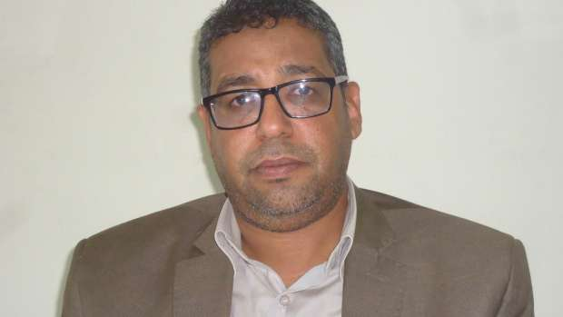
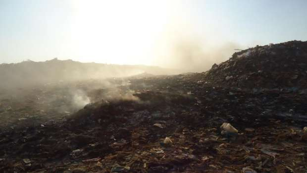

أحدث الأخبار
- مقتل 3 أشخاص وإصابة 3 آخرين في حادث مروري بالبحيرة
- وزير الخارجية يجري اتصالاً مع رئيس المجلس الرئاسي الليبي
- عاصمة مصر تتجه لزيادة سكانية نصف مليون العام الجاري
- باولو يقود هجوم الزمالك أمام رينجرز في دوري الأبطال
- المالية تعفي المطاعم غير السياحية من ضريبة القيمة المضافة بشروط
- "القضاء الإداري" يلزم الجامعة الأمريكية بتحصيل مصروفاتها بالجنيه المصري
- البورصة ترتفع بنسبة 0.52% في نهاية التعاملات
- إعادة فتح موانىء السويس بعد تحسن الأحوال الجوية
مناجم النفايات.. الثروة للشركات.. وللأهالي التلوث والمخلفات
سقط سائق الرافعة مختنق الأنفاس بعدما تصاعد غبار كثيف أثناء عمله في تسوية قطعة أرض من مدفن قديم للمخلفات بمحافظة القليوبية في يناير 2012. ولفظ الرجل أنفاسه كما فقد خمسة أشخاص آخرين كانوا على مقربة من مكان عمله في تسوية الأرض حياتهم اختناقاً بعدما استنشقوا الغبار والأتربة المتصاعدة. وأصيب 20 آخرون بحروق طفيفة وضيق في التنفس. وكشفت لجنة لتقصي الحقائق شكلتها المحافظة أن الغبار المتصاعد كان محملاً بغازات سامة كثيفة نتيجة تفاعل مخلفات كيماوية تراكمت في أروقة منطقة العكرشة التي تبلغ مساحتها 350 فداناً، وتكثر بها المصانع العشوائية والتابعة لمنطقة أبو زعبل في القليوبية.
وكان الموقع محجراً قديماً لاستخراج الرمال الصفراء تحول مع الوقت إلى مدفن للمخلفات، توقف العمل به في بداية التسعينات من القرن الماضي دون أي تطبيق لشروط إعادة تأهيل المحاجر والمناجم، حيث تفضل الشركات سداد الشرط الجزائي بدلاً من تحمل تكلفة إعادة التأهيل التي ينص عليها قانون الثروة المعدنية عام 1956 وتعديلاته في عام 2014. وهي مشكلة متكررة في مصر التي يوجد بها نحو ألفي منجم ومحجر لم تتوقف عمليات التعدين فيها، وفق بيانات هيئة الثروة المعدنية ووزارة التنمية المحلية، بينما توقفت عمليات التعدين في 1000 منجم آخر وفقاً للمهندس أيمن إبراهيم مدير إدارة المناجم والمحاجر بهيئة الثروة المعدنية، الذي أكد أنها إحصاءات تقديرية. بينما لا تمتلك الهيئة إحصائية رسمية عن المناجم والمحاجر التي تحتاج إلى عملية تأهيل.

المهندس أيمن إبراهيم مدير قطاع المناجم والمحاجر بالهيئة العامة للثروة المعدنية
ويوثق هذا التحقيق تورط شركات تعدين في الإضرار بالبيئة وإهدار مخزون المياه الجوفية وتلويث طبقات التربة بسبب عدم القيام بمعالجة التربة وإعادة تأهيل المناجم والمحاجر بعد انتهاء العمل بها، وأيضاً عدم محاسبتهم من جانب المحافظات أو هيئة الثروة المعدنية الجهة الرقابية التي ينص قانونها على إعادة أرض المناجم والمحاجر إلى طبيعتها الأولى بعد الانتهاء من استخراج الخامات. ويفاقم الحال عدم وجود معايير قياسية مصرية لمعالجة تلوث التربة. بعض المواقع تحولت إلى مدافن مخلفات عشوائية وأحدها تحول إلى بحيرة ملوثة في محافظة القليوبية التي لم تجد ما يمنع من الترويج لتلك البحيرة كمشروع سياحي محتمل أثناء مؤتمر شرم الشيخ الاقتصادي العام 2015.
دخان كثيف يتصاعد ممزوجاً بالغبار، ليحجب الرؤية. هكذا يبدو المشهد من ناحية طريق القاهرة الإسماعيلية الزراعي خلف بنايات سجن أبو زعبل على مشارف العاصمة. يتصاعد الدخان نتيجة اشتعال ذاتي لمخلفات القمامة في حين تفرغ شاحنات تابعة لحي شرق شبرا الخيمة حمولتها من المخلفات في مشهد نهاري وثقته الكاميرا.
وكانت الشركة العامة للثروة المعدنية "حكومية" تستخرج البازلت من أرض مناجم أبو زعبل التي يتقاسمها الآن مجتمع سكاني حديث متكامل، ومساكن عشوائية لقرية عرب العليقات ومدفن عشوائي للمخلفات، وبحيرة صنعت بتراكم المياه الجوفية في حفريات المناجم.
مدفن عشوائي للمخلفات بأبو زعبل
المنطقة التي كانت صحراوية يقطنها حالياً 30 ألف نسمة وفقاً للإحصاء الرسمي للسكان لعام 2009 ويشترك قاطنو البنايات العشوائية مع السكان الجدد للمشروع القومي للإسكان في الإطلالة على مدفن المخلفات العمومي بمحافظة القليوبية الذي يستقبل يومياً 4000 طن من مخلفات المنازل والمصانع وفقا لتقديرات إدارة المخلفات والدفن الصحي بمحافظة القليوبية.
استغل مسؤولو المحافظة أرض مناجم البازلت لتحويلها إلى مكبات لمخلفات 5 ملايين نسمة هم سكان القليوبية إحدى محافظات إقليم القاهرة الكبرى. حرائق المخلفات التي تشتعل ذاتيا أمر معتاد وشبه يومي، وفق رواية بكري محمد الحارس الذي يقبع في غرفة يكسو السواد جدرانها الأربعة، هى أخر ما تبقى من معالم الشركة العامة للثروة المعدنية "إحدى شركات القطاع العام تحت التصفية"، والتي كان منوطاً بها استخراج صخور البازلت من الموقع منذ عام 1957.
قانون الثروة المعدنية رقم 198 لسنة 2014 الذي أقره مجلس النواب في يناير الماضي، يؤكد على وجوب تهيئة الأرض وتسويتها في نهاية مدة ترخيص الاستغلال، دون التطرق لكيفية تنفيذ ذلك ودون الإشارة إلى لأي مواصفات قياسية، إذ تنص المادة 38 على أنه"يجب على المرخص له في نهاية مدة الترخيص إعادة تأهيل الأرض محل الترخيص وتسويتها". نفس الالتزام المنقوص كان يفرضه القانون رقم 86 لسنة 1956 بشأن المناجم والمحاجر الذي ألغاه صدور القانون الحالي، حيث كانت المادة 60 بلائحته التنفيذية "تلتزم المرخص له بردم الحفر وتمهيد الأراضي عند انتهاء مدة الترخيص أو العقد أو إلغائه، وذلك خلال المهلة التي تحددها المصلحة لهذا الغرض، وإلا قامت المصلحة بهذه الإعمال على نفقته الخاصة".
يدفع صاحب عقد الاستغلال وفقا للائحة التنفيذية تأمينًا يساوي القيمة الإيجارية التي تقدر سنوياً بعشرة آلاف جنيه مصري عن كل كيلو متر مربع من مساحة الاستغلال، وذلك لضمان تنفيذ شروط الترخيص، وبوجه خاص إعادة الحال إلى ما كان عليه قبل بدء الاستغلال.
وإذا لم ينفذ هذا الشرط، لا يرد التأمين وتتولى الجهة المسؤولة سواء المحافظة بالنسبة للمحاجر أو هيئة الثروة المعدنية بالنسبة للمناجم إعادة الشيء إلى أصله وفقاً لقانون الثروة المعدنية.
بحيرة التلوث مشروع سياحي
ومع تعثر الشركة العامة للثروة المعدنية "حكومية"، توقفت عملية التنقيب عام 1998، ولم يستخرج ما تبقى من البازلت الذي قدرته هيئة الثروة المعدنية في كتابها الصادر عام 2014 بحوالي 100 مليون متر مكعب. ولم يخضع الموقع لمعالجة التربة ولا إعادة تأهيل. وبسبب هذه المخالفة صدر قرار محافظ القليوبية رقم 1913 لسنة 1998 بتوقيع الحجز الإداري على ممتلكات الشركة. وبعد مرور أربعة أعوام على قرار الحجز الإداري قامت المحافظة بتحويل 50 فداناً من أرض المناجم إلى مدفن عشوائي للقمامة، مستغلة عمق مناطق الحفر الذي يصل إلى 40 متراً لدفن المخلفات الصناعية والمنزلية.
هل نفذ الحجز الادراي على ممتلكات الشركة؟
وفاقم الأضرار البيئية تسرب المياه الجوفية لتغطي 70 فداناً ملاصقة لمدفن المخلفات في أرض المناجم التي تبلغ مساحتها 634 فداناً، لتتكون بحيرة من المياه الجوفية يصل عمقها إلى 40 متراً.

بحيرة عرب العليقات التي تكونت من تسرب المياه الجوفية
تتساقط مواد ملوثة في البحيرة أثناء تسوية الجرافات للمخلفات التي تفرغها السيارات وفقاً لما رصدته عدسة الكاميرا. وزاد من التلوث قيام سجن أبو زعبل بصرف مخلفاته في البحيرة على مدى عامين، قبل أن تنقلها إدارة السجن إلى المصرف الصحي بعد احتجاج أهالي قرية عرب العليقات التي تعتمد على المياه الجوفية كمصدر للشرب، حسب محمد بركات المدير التنفيذي لفرع الشركة العامة للثروة المعدنية بأبو زعبل والمقيم بالقرية.
المفارقة أن محافظة القليوبية روجت خلال مؤتمر شرم الشيخ الاقتصادي العام الماضي لتحويل بحيرة المياه الجوفية، التي تحولت إلى بؤرة شديدة التلوث إلى مشروع سياحي عالمي، وقامت بإعداد دراسات جدوى من أجل تحقيق هذا المشروع بحسب فيديو ترويجي على قناة المحافظة على يوتيوب.

بحيرة عرب العليقات للمياه الجوفية التي تكونت وسط تلال المخلفات
ويقول أشرف عبد السلام مدير عام الإدارة العامة للنظافة والتجميل ومدير مشروع الدفن الصحي بمحافظة القليوبية إن لجنة متخصصة من جامعة بنها تعد الدراسات الخاصة بالمشروع، لكن التنفيذ مؤجل حتى يتم توفير موقع آخر تنقل إليه المخلفات.
ولدى مواجهة أشرف عبد السلام مدير مشروع الدفن الصحي بالمحافظة بما وصلت إليه أرض المناجم في أبو زعبل، رد بقوله "عندنا زبالة في الشارع والمواطن مش هيرحمنا هنعمل إيه يعني؟" وأضاف أن المحافظة لا تمتلك الوسائل والمعدات التي تمكنها من إعادة تأهيل الأرض.
وأما الهيئة العامة للثروة المعدنية، الجهة الرقابية المسئولة عن المناجم والمحاجر في مصر، فلم يكن لديها علم بما وصلت إليه أرض المناجم بأبو زعبل. وفي إشارة لمسؤولي المحافظة، تساءل المهندس أيمن إبراهيم مدير قطاع المناجم والمحاجر بالهيئة مندهشاً "إزاى يحولوا المكان إلى مدفن للمخلفات.. مين قال لهم إن مفيش بازلت في الأرض؟." وحمل المسؤولية الكاملة لمحافظة القليوبية باعتبارها المسئول الأول عن أراضي المحاجر بأبو زعبل، قائلا: هذا نتاج عدم تبعية كل ما يتعلق بالثروة المعدنية لإدارة الهيئة، وهو ما عجز القانون الجديد عن حسمه. حيث يقتصر دور هيئة الثروة المعدنية على الإشراف فقط بالنسبة لمحاجر التي تقع في نطاق المحافظات."
الآثار والأضرار البيئية الناتجة عن عدم تأهيل أرض المناجم ومعالجتها تناولها تقرير الأثر البيئي للمدفن العشوائي للمخلفات، الذي قام بتنفيذه فريق بحثي يتبع شركة كيمونكس Chemonics الألمانية ضمن برنامج التعاون بين مكتب البيئة للوكالة الأمريكية للتنمية الدولية USAID والحكومة المصرية. انتهى فريق البحث إلى وضع خطة عاجلة للقضاء على تلوث المياه والهواء، اللذين وصفهما التقرير بأنهما يمثلان تهديدًا للمناطق الصناعية والسكنية المجاورة، ويفاقمه تجمع المياه أسفل النفايات الصلبة في مناطق الحفر التي تحولت إلى مدفن للمخلفات، وصارت هناك إمكانية أن ينتقل التلوث إلى المياه الجوفية التي تعتبر أحد مصادر مياه الشرب وري المحاصيل الزراعية بالمنطقة.
ومن أجل تنفيذه هذه الخطة طالب فريق الباحثين بإعداد تصميم جديد لموقع دفن النفايات يقلل الضرر البيئي إلى أدنى حد، خاصةً الإضرار بالمياه الجوفية والهواء، وكذلك القضاء على النيران المستعرة على الدوام بالموقع. وأوصى فريق التقييم بتجفيف المياه في مناطق الحفر عن طريق معدات الضخ، بهدف منع انتقال الملوثات من خلال المياه إلى المجاري المائية المجاورة لها.
وأرجع مصدر بمحافظة القليوبية -رفض الإفصاح عن اسمه- سبب عدم تنفيذ هذه التوصيات إلى التكلفة المالية المرتفعة، حيث قدرت الدراسة التكلفة الأولية لإنشاء موقع دفن صحي للنفايات آنذاك بمبلغ خمسة ملايين و200 ألف جنيه مصري تقريباً تشمل تكلفة تجفيف المياه وإعداد تصميم الموقع وتنفيذه وبدء تشغيله. وكان حساب التكلفة قبل أن يفقد الجنيه المصري نصف قيمته بعد تحرير سعر صرفه أمام العملات الأجنبية في سبتمبر الماضي.
الشركة العامة للثروة المعدنية لجأت إلى القضاء ضد محافظة القليوبية التي صادرت الأرض وما عليها من معدات وممتلكات للشركة المملوكة للدولة بسبب عدم تسوية الأرض. وبعد سنوات في دهاليز المحاكم توصل الجانبان لاتفاق ودي، حصلنا على نسخة منه، يقضي بتقسيم ملكية الأرض بينهما ووقف النزاع القضائي في عام 2008 دون تسوية أو إعادة الأرض إلى طبيعتها الأولى.
ولدى مواجهة محمد بركات المدير التنفيذي لفرع الشركة العامة للثروة المعدنية بأبو زعبل، التي كانت تقوم بعملية التعدين، قال إن الشركة كانت تقوم باستمرار بسحب المياه الجوفية المتسربة إلى السطح أثناء التعدين وبعد حجز المحافظة على أرض المشروع، توقف سحب المياه الجوفية ومع مرور الوقت تحولت إلى بحيرة بهذا الشكل.
مناجم مهملة في البحر الأحمر
وفي محافظة البحر الأحمر، وتحديداً بين مدينتي القصير وسفاجا، تلمح العين ما يبدو كأطلال مدينة هجرت منذ عقود. اللون الأصفر يكسو المكان على امتداد البصر، وجدران مهدمة وبقايا سقوف متساقطة. وبين الحين والأخر تظهر فتحات وتجاويف عشوائية في باطن الجبال تشير إلى آثار عمل شركات التعدين.
لا يختلف المشهد كثيرا في منجم الفواخير للذهب في منطقة وادي الحمامات، الذي توقفت عمليات التعدين به منذ خمسينيات القرن الماضي. وهناك أيضاً مناجم الفوسفات بجبل البهار والرهاوي ويونس والحمراوين وحماطة التي توقف التنقيب في معظمها، بسبب عقبات مالية وإدارية كما حدث مع شركة النصر للتعدين إحدى أقدم شركات التعدين المملوكة للدولة في مصر، بحسب الجيولوجي عبد الناصر سلام رئيس الشركة.
منجم الفواجير متوقف عن التعدين منذ منتصف القرن الماضي
وتسبب عدم تأهيل المناجم المتوقفة وتسوية أرضها في صحراء البحر الأحمر، في ظهور المياه الجوفية بكثافة داخل ممرات أنفاق التنقيب خاصة في مناطق الاستغلال تحت سطح الأرض.
ويقول طارق خيري الذي كان يشغل منصب كبير مفتشي المناجم بمحافظة البحر الأحمر، على مدى الأعوام الخمسة والعشرين الماضية إن العمل توقف في 12 منجماً بمدينة القصير وضواحيها التي يوجد بها22 منجما يتنوع إنتاجها ما بين الفوسفات والكوارتز والفلدسبار.
منجم الفلدسبار بصحراء مدينة القصير
وأشار سلام رئيس الشركة الحكومية "النصر للتعدين" إلى قيود الميزانية التي تمنع إعادة تأهيل المناجم التابعة للشركة بمدينة القصير، وقال "إنها مشروعات قديمة يمتد عمر بعضها إلى 30 عاماً. لا نستطيع تطبيق القوانين بحذافيرها، خاصة فيما يتعلق بالآثار البيئية، خصوصاً أن هذه المناطق التعدينية تقع في مناطق صحراوية خالية من السكان، ولكننا نحرص على عدم الإضرار بالبيئة من خلال إتباع الإرشادات البيئية أثناء عملية التنقيب مثل السيطرة على الانبعاثات، وكذلك عدم استخدام أي مواد محظورة في عملية التعدين."
المهندس أيمن إبراهيم مدير قطاع المناجم والمحاجر في هيئة الثروة المعدنية، قال إن عدم تأهيل الجزء الأكبر من أرض هذه المناجم يرجع إلى أن عملية التنقيب فيها لم تنته بشكل كامل، وإنما توقفت بسبب انتهاء عقود الاستخراج أو مشكلات مالية تواجه الشركات. لكن اللائحة التنفيذية لقانون الثروة المعدنية، تنص في مادتها 89 بـ "إلزام المرخص له بردم الحفر وتمهيد الأراضي، وذلك عند انتهاء مدة التراخيص أو إلغائه لأي سبب"، ولم تشترط نفاد الخام منها. وعلق مدير قطاع المناجم بالهيئة على ذلك قائلا "المهم أن عملية تأهيل الأرض وتسويتها هتحصل في النهاية". ولم يحدد إطارا زمنيا لذلك.
بؤرة تلوث بين مدينتين صناعيتين
منطقة الروبيكي موقع تعديني قديم آخر تحول على مدى عقدين إلى مدفن مخلفات عشوائي شرقي القاهرة بين مدينتين صناعيتين، وهما مدينة بدر التابعة لمحافظة القاهرة ومدينة العاشر من رمضان التابعة لمحافظة الشرقية. وتبلغ مساحة الموقع 280 فدانا، وكان قبل 20 عاماً منطقة محاجر تستخرج منها مواد البناء "رمال وزلط وطفلة". وبعد توقف العمل به لم يخضع لأي عملية إعادة تأهيل، ليتحول منذ ذلك الحين إلى مدفن عمومي عشوائي لمخلفات المصانع والمنازل.

مدفن الروبيكي
الرمال الصفراء الممتدة بمنطقة الروبيكي، لا تزال تطغى على المكان ذي الطبيعة الصحراوية والذي تنتشر به تلال المخلفات ويتصاعد الدخان من النيران المشتعلة في أكوام القمامة. وعلى مرمى البصر تلوح بنايات المدينة الصناعية للجلود المقرر تشغيلها أوائل 2017. سكان المنطقة من البدو الذين يقطنون في بيوت بسيطة لا يتجاوز ارتفاعها الطابق الواحد. ويعدد موسى أبو سعده أحد السكان بلهجته البدوية الأضرار الناتجة عن تحويل المحاجر إلى مدفن للمخلفات في الروائح النفاذة الكريهة التي تتسلل إلى غرف منازلهم، ومع سواد الليل تتزايد النيران المشتعلة بالمدفن ويمتزج دخانها الكثيف مع نسمات الهواء واتجاه الرياح.
وألقت هيئة الثروة المعدنية بالمسئولية على محافظة القاهرة، فيما وصلت إليه أرض المحاجر بالروبيكي، باعتبارها الجهة التي تمنح عقود الاستغلال لأراضي المحاجر التي تقع داخل حددوها، كما جاء على لسان المهندس أيمن إبراهيم مدير قطاع المناجم والمحاجر بالهيئة.
ولدى سؤال اللواء على محمد عطوة، رئيس إدارة المحاجر بمحافظة القاهرة، عن سبب عدم إعادة تأهيل وتسوية الأرض، رد قائلاً إن هذا "نادراً ما يحدث". لكنه اعتبر أن مهمة إدارته هي إدارة الثروة المعدنية بالشكل الأمثل، وليس تسوية الأرض أو معالجتها. وأضاف أن الزحف العمراني على هذه المناطق قد يدفعنا إلى إعادة تسويتها باستخدام مخلفات البناء.
تجربة وحيدة لمعالجة التربة
في أحد جوانب أرض المناجم بأبو زعبل، تطوق أسلاك شائكة مشدودة على أعمدة حديدية قطعة أرض منبسطة تخلو من ثالوث التلوث في باقي المنطقة، فلا توجد بها تلال قمامة ولا أكوام مخلفات ولا تسريبات مياه جوفية.
ويقول محمد بركات المدير التنفيذي لفرع الشركة العامة للثروة المعدنية، إن إحدى شركات البترول، استأجرت هذه الرقعة البالغة مساحتها 20 فدانا كساحة لعلاج تربة ملوثة نقلت إليها من مجمع شركات البترول بمنطقة مسطرد. وتولت شركة اتش بلاس الكورية المتخصصة في معالجة التربة نقل 120 ألف متر مكعب من التربة الملوثة إلى منطقة أبو زعبل ومعالجتها ببكتريا تتفاعل مع الملوثات البترولية لتصبح تربة آمنة ليس لها أضرار بيئة، في أول عملية من نوعها في مصر.
محمد بركات المدير التنفيذي لفرع الشركة العامة للثروة المعدنية بأبو زعبل
ويقول المهندس عمرو موسى المتخصص في معالجة التربة بشركة gse&c الكورية المنفذة لمشروع معمل تكرير البترول إن عملية المعالجة واجهت عقبات كثيرة أبرزها عدم وجود شركات مصرية متخصصة في هذا المجال المعقد، وهو ما دفع الشركة إلى الاستعانة بشركة كورية. وأضاف أن "العقبة الأهم والأبرز كانت عدم وجود مواصفات قياسية مصرية للتربة أو تشريعات قانونية خاصة بتلوث التربة، مما دفعنا إلى الاعتماد على المعايير الدولية التي يعتمدها البنك الدولي باعتباره أحد الجهات الممولة للمشروع".
المهندس عمرو موسى المتخصص في معالجة التربة بشركة gse
ويقول جانج هيوك لي مدير التخطيط في شركة اتش بلاس الكورية التي قامت بمعالجة التربة، إن الشركة بدأت بحفر آبار متتابعة انطلاقاً من أرض المنجم حتى ترعة الإسماعيلية القريبة، لسحب عينات سواء من المياه الجوفية أو الترعة لمعرفة مستويات التلوث. وأضاف أن نتائج التحاليل كشفت ارتفاع نسبة التلوث في الموقع بما يتجاوز المسموح به وفقاً للمواصفات القياسية العالمية والمصرية لكن النسبة تقل في ترعة الإسماعيلية لأن مياهها جارية. وأضاف أن الخطورة الحقيقية تتمثل في تلوث المياه الجوفية التي تمثل مصدراً لمياه الشرب في المناطق المجاورة، وهو ما حذر منه التوصيف البيئي لمحافظة القليوبية الصادر عام 2007. لكن مسؤول الشركة الكورية رفض اطلاعنا على نتائج التحاليل، قائلاً إنها تتعلق بعدة أطراف وخاصة باستخدامات العمل فقط، مشيراً إلى تسليم نسخة منها إلى جهاز شئون البيئة الذي رفض بدوره اطلاعنا على النتائج.
جانج هيوك لي مدير التخطيط في شركة اتش بلاس الكورية
وكان الحل في سحب عينة من المياه الراكدة لما يسمى "بحيرة العليقات"، وكذلك عينة أخرى من مياه النيل بترعة الإسماعيلية التي تبعد عن البحيرة ما لا يزيد على كيلومتر.
نتائج التحليل في مركز التحاليل الدقيقة التابع لجامعة القاهرة، أكدت تلوث مياه النيل بترعة الإسماعيلية، بسبب تسرب المياه الجوفية الملوثة المتراكمة في بحيرة العليقات في أرض مناجم أبو زعبل، وفقا للدكتور حملي الزنفلي أستاذ تلوث المياه بالمركز القومي للبحوث الذي قال إن المياه الجوفية تصب في أقرب مجرى مائي لها.
ويقول المهندس عمرو موسى المتخصص في معالجة التربة وأحد المشاركين في معالجة التربة في ابو زعبل إن "حماية المياه والهواء من التلوث تبدأ من حماية التربة".
وأضاف أن البداية تكون بوجود قوانين واضحة ومعايير ثابتة للحفاظ على التربة ومعالجة تلوثها "لأن أساس التلوث يأتي من التربة".
أنجز هذا التحقيق بدعم من شبكة إعلاميون من أجل صحافة استقصائية عربية "أريج" www.arij.net.
الاخبار المتعلقة


{kind=link}
تعليقات الفيسبوك